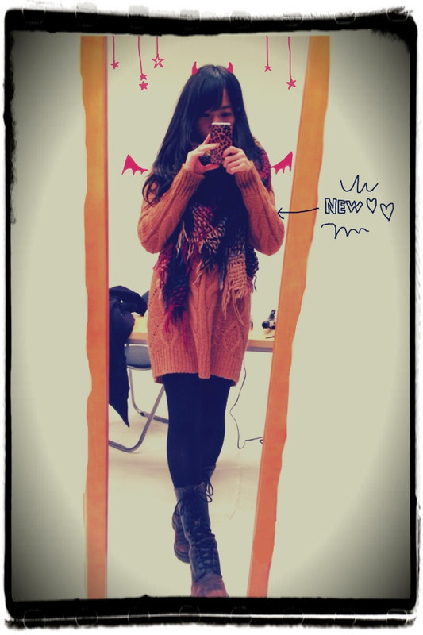
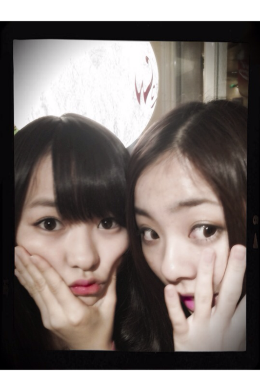

| 2012/01 03 Tue | 44回目*marika |
まりかです。
いつも読んでくださってる方、
初めて読んでくださった方、
コメントしてくださった方、
ありがとうございます***
...............................
・スキンケアとヘアケアで
使っているものを教えて！
我が家はオーガニックのもの
使ってます:)b!!
髪は特に何もしてないです*
普段は化粧水、乳液＊
気合い入れる時はパック!!笑
・オーディションではなにを歌った？
aikoさんの『カブトムシ』♪
・今年、初めてしたこと、
じゃなければ初めてしたいこと、ぜひ教えて！
今年初めて食べたのは
おしるこです!!
あぁ...
元旦におもち何個食べたんだろか...
・お母さん、書道かなんかやってた？
あっ、お箸袋の名前はね!!
私が書いたんですよ:D
家族全員の名前書いたよ!!
ほんとだよ=3
かぁちゃんは書道やってません。
・“ばぶちゃん”は,もしかして禁句(笑)!?
...ん〜もう任せます笑
マリカーて呼んだりもしてるもんねx(
あだないっぱい:D☆
...............................
紅白＊
AKB48さんのパフォーマンスが
本当にすばらしくて感動しました!!
私たちは本当に努力するしかありません。。
頑張るしかない!!
そして、椎名林檎さん。
素敵だった><
レトロなあの雰囲気 ♡♡
録画してたから何度も見た!!
ガキ使も録画して...
もう笑った笑ったxD!!
しーふーくーーー

このニットワンピおNeWのやつです。
E hyphen ♡
....このブーツ履き過ぎだね!!←
他の靴の私服また載せます♪
部屋のしゃしんとかも載せます♪
最近けほけほせきが出る私...;(
どうしたもんかな...><
いやああぁ風邪ひきたくないよ~泣
みなさんも気をつけてください><
０時過ぎたけど...
今日はお疲れさまりか**
明日も頑張りましょう!

♡♡

LOVE
ベビたん*****bA by marika